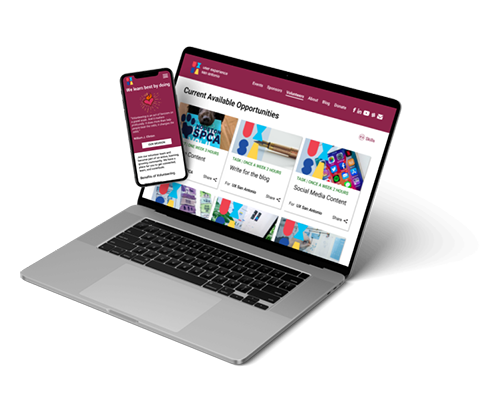
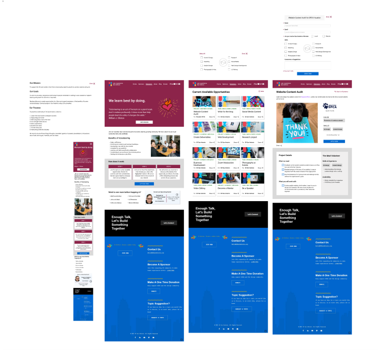

<div class="block">
  <div class="container new-section">
    <h1>UXSA Volunteer Page</h1>
    <p>
      UXSA is an organization that supports the UX community in San Antonio by
      creating ways for people to connect, explore, and grow.
    </p>
    <p>
      They wanted to redesign their Volunteer page to have better engagement
      from the UX community, by offering clear opportunities. They organized a
      Remote Design Sprint, and I participated as a UX Designer.
    </p>
    <div class="">
      <section class="collapsible collapsible--expanded">
        <div class="collapsible__header">
          <h2>Scope</h2>
          <svg class="icon collapsible__icon">
            <use xlink:href="../images/sprite.svg#plus"></use>
          </svg>
        </div>
        <div class="grid grid--cols2 collapsible__content">
          
          <div class="info info-grid">
            <span class="emphasize">Duration</span>
            <span>6 weeks</span>
            <span class="emphasize">Tools</span>
            <span>
              Phone, Video Conferencing, Web Research, Paper Sketches, FIGJAM,
              Mural, Figma, Google Spreadsheets
            </span>
            <span class="emphasize">Roles</span>
            <span>
              User Research, UX Design, Prototyping, Usability Tests, Design
              Sprint
            </span>
          </div>
        </div>
      </section>
    </div>

    <section class="collapsible">
      <div class="collapsible__header">
        <h2>The Research</h2>
        <svg class="icon collapsible__icon">
          <use xlink:href="../images/sprite.svg#plus"></use>
        </svg>
      </div>
      <div class="collapsible__content">
        <p>
          We were introduced to the stakeholders, and they were given time to
          explain not only the organization's business and social goals but also
          the expectations and benchmarks to measure the success of such
          redesign along with all the research that had been done to that point.
        </p>
        <p>
          As they were presenting all the facts we proceeded to write our "How
          Might We's" sticky notes on Mural and at the end we put them to a vote
          and organized them into themes to start defining the most compelling
          "HMW" opportunities.
        </p>
        <p>
          Not only the team voted on this but the stakeholders were also given
          the opportunity to vote to have a better alignment with the
          prioritization of the organization's goals.
        </p>
        <p>
          One of the questions I asked the stakeholders for clarification was
          whether or not they were thinking about national outreach and
          opportunities or if it was going to be just a local effort. I thought
          it was important to address this given the nature of the current
          market trends, and from a user point of view.
        </p>
      </div>
    </section>

    <section class="collapsible">
      <div class="collapsible__header">
        <h2>The Design</h2>
        <svg class="icon collapsible__icon">
          <use xlink:href="../images/sprite.svg#plus"></use>
        </svg>
      </div>
      <div class="collapsible__content">
        <p>
          We began by sorting HMW (how might we) cards and discussing the main
          goals of stakeholders. During the ideate phase, each team member
          presented and explained their sketches, and we all voted on the best
          features. I then created a mid-fidelity design that incorporated the
          most popular features and sections, while keeping the structure of the
          website in mind. I decided to stick to the current website layout and
          created a main page with a call to action for the organization's
          mission, benefits of volunteering, steps to volunteer, and off-ramp
          options.
        </p>
        <p>
          The design also included a search page with filters by skill and a
          detailed page for each volunteer opportunity. I believed this would
          address all of the main objectives for the design. The final prototype
          for user testing was done by one of the facilitators of the Sprint. We
          worked on the tasks and questions to ask the users recruited for the
          User Test, and groups were assigned to each user.
        </p>
        <p>
          We managed to get four users for remote testing of the prototype that
          had been put together. Following the scripted questions and tasks,
          each user was paired with a team of two members of the sprint for
          better note-taking. Some of the most relevant insights from the user
          testing were that the order of information presented by relevance,
          time expectations, and skills filters were important, while the
          featured volunteer opportunities carousel was irrelevant.
        </p>
      </div>
    </section>

    <section class="collapsible">
      <div class="collapsible__header">
        <h2>My Design Proposal</h2>
        <svg class="icon collapsible__icon">
          <use xlink:href="../images/sprite.svg#plus"></use>
        </svg>
      </div>
      <div class="collapsible__content">
        
        <a
          href="https://www.figma.com/proto/cxIPWmmII5FQzaHUGC3I2M/UXSA-Volunteer-Page?page-id=0%3A1&node-id=86-85&starting-point-node-id=86%3A85&scaling=scale-down&mode=design&t=5EZekJqlBgRPnNCH-1"
          target="_blank"
          class="btn btn--primary"
        >
          <svg class="icon">
            <use xlink:href="../images/sprite.svg#figma"></use>
          </svg>
          View Prototype
        </a>
      </div>
    </section>

    <section class="collapsible">
      <div class="collapsible__header">
        <h2>Conclusions & Reflections</h2>
        <svg class="icon collapsible__icon">
          <use xlink:href="../images/sprite.svg#plus"></use>
        </svg>
      </div>
      <div class="collapsible__content">
        <p>
          This was a very interesting process. We ran into technical
          difficulties and time constraints but I believe we managed to
          accomplish the goals set for it. The sprint lasted 6 weeks, and ran on
          Saturdays 2-3 hours each session.
        </p>
        <p>
          If I were to change something it would probably be the research side
          of it. I don't believe we had all the information that could've been
          relevant for this particular process and maybe use A/B Testing since
          there was another prototype that could've been used that might have
          cover some of the observations from the user tests.
        </p>
        <p>
          I learned that teamwork is extremely important for this methodology
          and that constant feedback gives clarity to the overall direction of
          the effort.
        </p>
        <p>
          It was very satisfying to see some of my ideas to go into the final
          product and the acceptance that users showed in the user tests. This
          was very motivating and encouraging.
        </p>
      </div>
    </section>
  </div>
</div>
